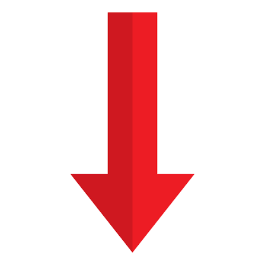
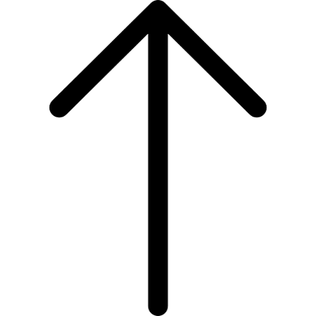

Tennis Club
Tennis Club
Теннисный турнир
Игроки и чемпионы
История
Перейти вниз

Как устроен теннисный турнир
- Жеребьёвка определяет соперников и турнирную сетку.
- Матч состоит из сетов, а сет — из геймов.
- Для победы в гейме обычно нужно выиграть минимум четыре очка с преимуществом в два.
- При счёте 6:6 в сете часто проводится тай-брейк.
- Матчи играют на траве, грунте и харде.
- На турнирах Большого шлема мужчины в одиночном разряде играют до трёх выигранных сетов.
- Судья следит за соблюдением правил и объявляет счёт.
Примечания
Теннис сочетает технику, выносливость и стратегию.
На профессиональных турнирах используются электронные системы определения попадания мяча.
Перейти вверх

Теннисный турнир
Игроки и чемпионы
История
Перейти вниз
Легендарные теннисисты и их титулы
- Роджер Федерер
- 20 титулов Большого шлема
- 8 побед на Уимблдоне
- Рафаэль Надаль
- 22 титула Большого шлема
- 14 побед на Roland-Garros
- Новак Джокович
- 24 титула Большого шлема
- 10 побед на Australian Open
- Серена Уильямс
- 23 титула Большого шлема в одиночном разряде
Перейти вверх
Теннисный турнир
Игроки и чемпионы
История
Перейти вниз
История
Современный теннис сформировался в Великобритании в XIX веке.
Первый Уимблдонский турнир состоялся в 1877 году.
Теннис входит в программу современных Олимпийских игр.
Четыре турнира Большого шлема проводятся в Австралии, Франции, Великобритании и США.
Матчи проходят на разных покрытиях: траве, грунте и харде.
Игроки используют подачи, удары справа и слева, воллеи и смэши.
На крупных турнирах выступают сильнейшие теннисисты мира.
В теннисе важны скорость реакции, точность и психологическая устойчивость.
Перейти вверх
Теннисный турнир
Игроки и чемпионы
История